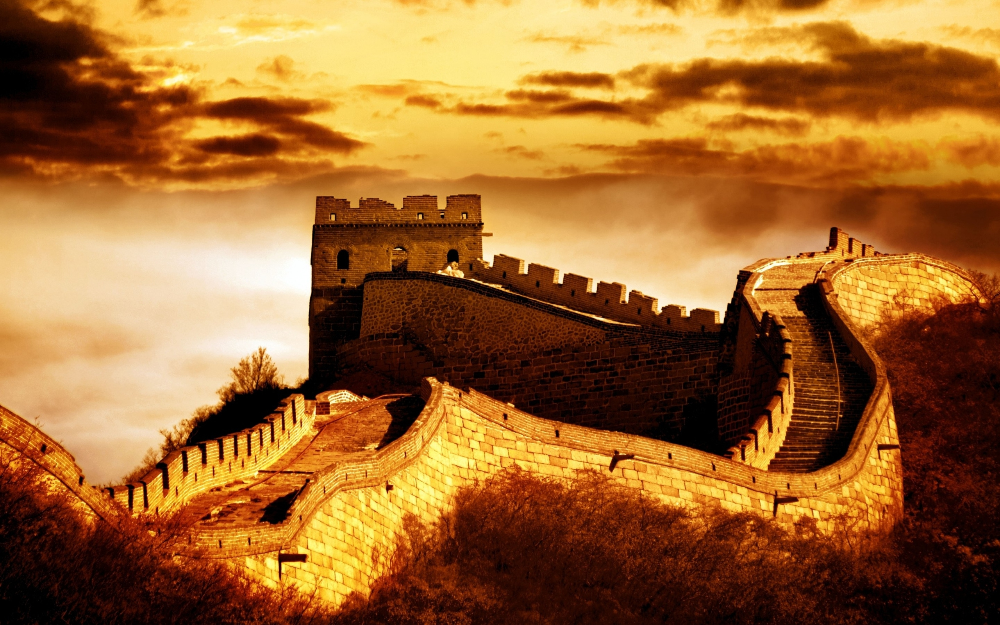
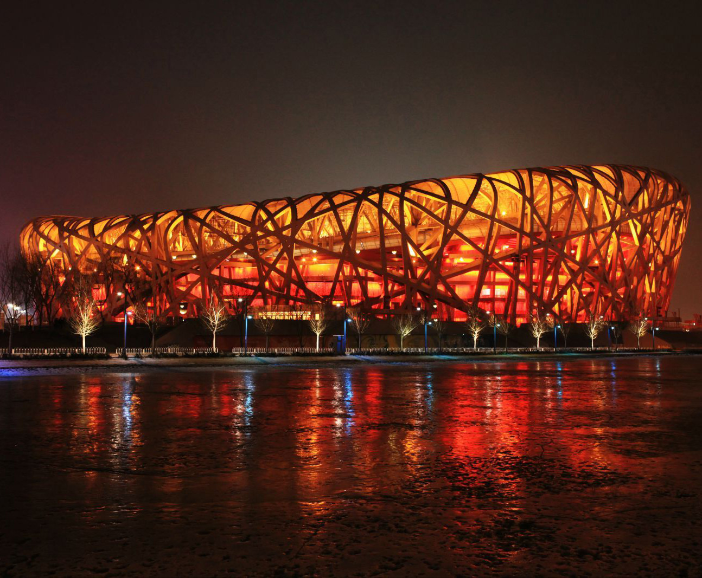
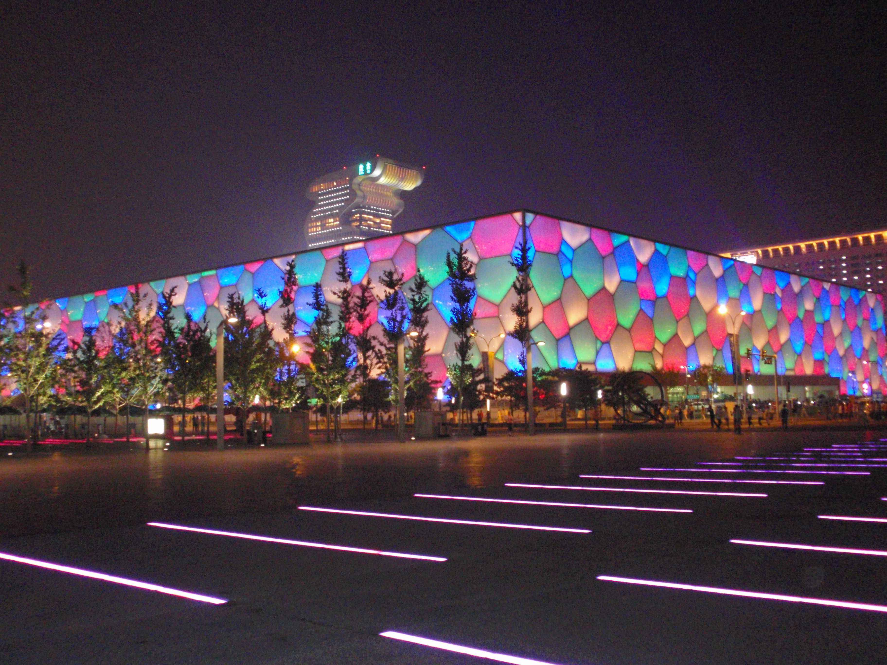
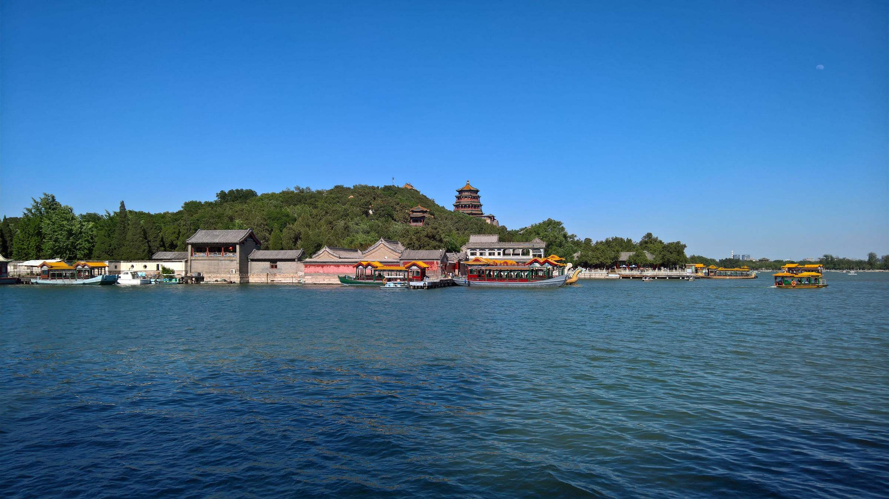

北京，简称“京”，是中华人民共和国的首都、直辖市、国家中心城市、超大城市、国际大都市，全国政治中心、文化中心、国际交往中心、科技创新中心，是中国共产党中央委员会、中华人民共和国中央人民政府、全国人民代表大会、中国人民政治协商会议全国委员会、中华人民共和国中央军事委员会所在地，也是中部战区司令部驻地。 北京位于华北平原北部，背靠燕山，毗邻天津市和河北省。北京的气候为典型的北温带半湿润大陆性季风气候。
北京是首批国家历史文化名城和世界上拥有世界文化遗产数最多的城市，三千多年的历史孕育了故宫、天坛、八达岭长城、颐和园等众多名胜古迹。早在七十万年前，北京周口店地区就出现了原始人群部落“北京人”。公元前1045年，北京成为蓟、燕等诸侯国的都城。公元938年以来，北京先后成为辽陪都、金中都、元大都、明、清国都。1949年10月1日成为中华人民共和国首都。
北京被全球最权威的世界城市研究机构之一GaWC评为世界一线城市。联合国报告指出，北京人类发展指数居中国城市第二位。2016年，北京人均可支配收入达到52530元，社会消费品零售总额11005.1亿元。截至2016年末，北京常住人口2172.9万人，比上年末增加2.4万人，增长0.1%，增量比上年减少16.5万人，增速比上年回落0.8个百分点。
2015年7月31日，国际奥委会主席巴赫宣布北京携手张家口获得2022年冬季奥林匹克运动会的举办权。北京由此成为全球首个既举办过夏季奥运会又将举办冬季奥运会的城市。
北京是全球拥有世界遗产（7处）最多的城市，是全球首个拥有世界地质公园的首都城市。北京对外开放的旅游景点达200多处，有世界上最大的皇宫紫禁城、祭天神庙天坛、皇家园林北海公园、颐和园和圆明园，还有八达岭长城、慕田峪长城以及世界上最大的四合院恭王府等名胜古迹。北京市共有文物古迹7309项，99处全国重点文物保护单位（含长城和京杭大运河的北京段）、326处市级文物保护单位、5处国家地质公园、15处国家森林公园。
北京是唯一入选世界15大购物之都的内地城市，拥有百余家大中型购物商场。王府井大街、前门大栅栏、西单商业街是北京的传统商业区；国贸商城、东方新天地、中关村广场。琉璃厂或潘家园的古玩城拥有各类古玩。秀水街和雅秀服装批发市场销售各类服装。景泰蓝、玉器、丝绸刺绣等历史悠久；民间手工艺品，如泥人、京剧脸谱、风筝、剪纸等物美价廉，都可以作为馈赠亲友的礼品。
